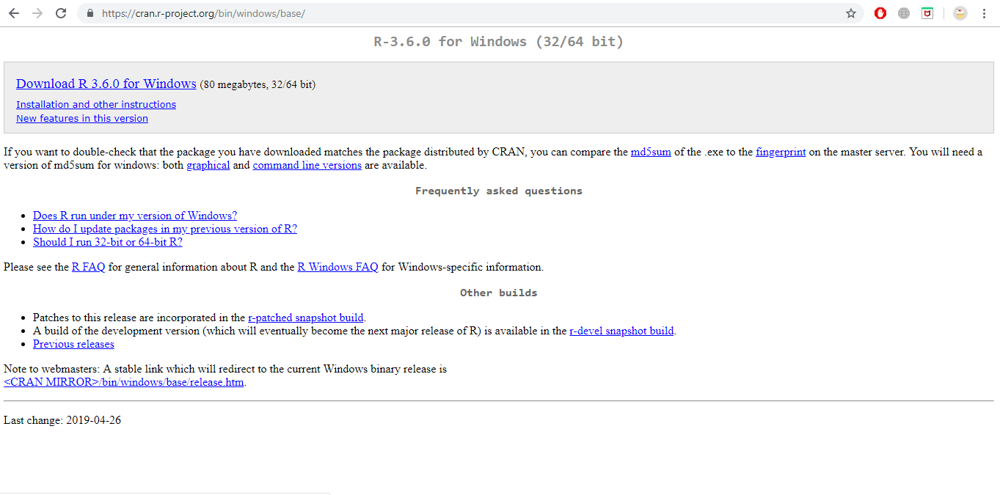
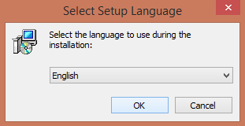
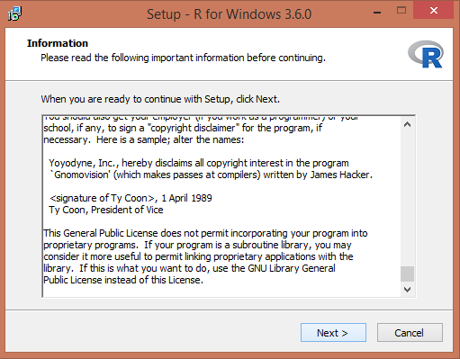
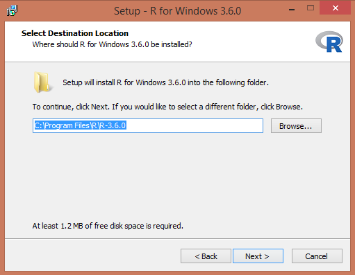
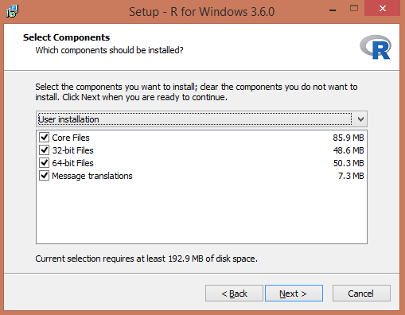
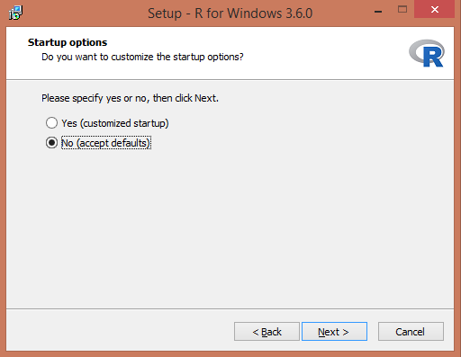
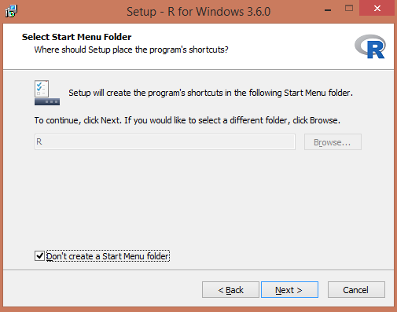
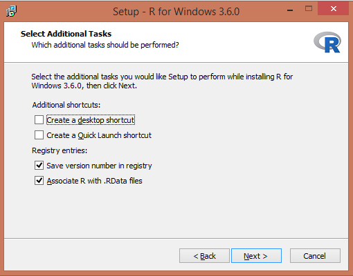
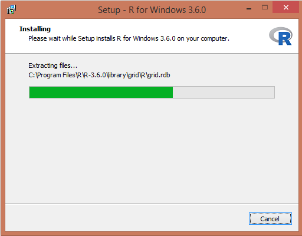
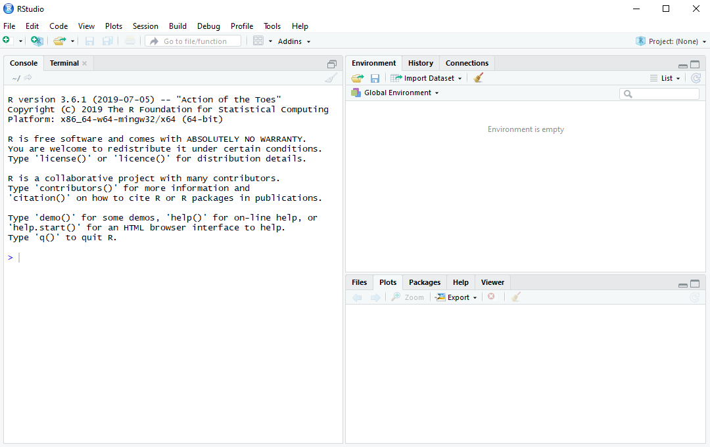

Kapitel 2 Statistisk programmering med R
2.1 Statistiska program
Det finns etiska och praktiska skäl att lära sig programmera i statistikprogram och inte använda menybaserade system. Programmering
- är nödvändig att kunna replikera analyser. Inom forskning ska andra forskare erhålla samma resultat givet samma data och analys. Inom näringsliv, på myndigheter och i organisationer ska kolleger kunna genomföra och/eller ta över data och tillhörande analyser.
- spar tid om analyser ska repeteras (med eller utan ändringar).
- ger tillgång avancerade analyser samt frihet att utforma egna analyser.
- bidrar till ökad förståelse för dataanalys
Kruxet? Tar tid att lära sig!
Nedan stående är min personliga syn på ett antal vanliga statistikprogram.
- Minitab – Mycket enkelt att lära sig. Används främst inom kvalitetskontroll i industri samt planering av randomiserade försök. Billigt. Begränsat urval av statistiska metoder.
- SPSS – Enkelt att lära sig. Stor spridning bland samhällsvetare och utredare. Ganska stort urval av statistiska metoder. Krånglig programkod. Rörigt.
- Stata – Enkelt att lära sig och enkel programkod. Spridning bland forskare inom ekonometri och epidemiologi. Stort urval av, även de senaste, statistiska metoderna..
- SAS – Medelsvårt att lära sig, med en föråldrad programkod. Kan hantera stora dataset. Används av myndigheter, industri och forskare inom alla områden. Standard för läkemdelsbolag. Stort urval av statistiska metoder, men inte de allra senaste. Dyrt. Svårt att göra bra figurer.
- R – Svårt att lära sig. Gratis. Flexibelt. Mycket stor spridning inom alla områden.
- Python – Mycket svårt att lära sig. Gratis. Flexibelt. Stor spridning inom maskininlärning och AI.
- Excel – Är inget statistikprogram!
2.2 Om R
- Gratisprogrammet är kommer att användas på kursen.
- ‘’R is a free software environment for statistical computing and graphics.’’
- Genom att använda R får du fri tillgång till avancerade verktyg för dataanalys och datavisualisering.
2.3 Allmänna tips om R på kursen
- R kommer användas löpande under kursens gång så se till att snabbt få grunderna på plats. Även om det vissa avseenden kan kännas tungt och frustrerande inledningsvis att programmera i R vinner man inget på att skjuta upp att påbörja arbetet med R.
- Det krävs många timmar av aktivt arbete med R för att lära sig det. Om du arbeta aktivt och löser till exempel uppgifter även från bildspel så bygger du på antalet timmar vilket innebär att du lär dig R.
- De flesta lösningar till uppgifter på kursen har tillhörande R-kod. Mitt förslag är att ni löser uppgifterna på följande vis: 1.Lös uppgifterna för hand (precis som tiden före R). 2. Studera sedan R-koden och se hur uppgiften har lösts med hjälp R. 3. Ändra och laborera i R-koden för att se vad som händer. 3. Målet är att småningom arbeta med R direkt för att lösa uppgifterna, men inledningsvis löses uppgifter för hand för begripa uppgiften rent statistiskt. Därefter, i takt med att R alltmer blir verktyget för statistiska analyser, används R för att lösa uppgifter.
- Var inte rädd för att använda resurser på nätet. Ett känt forum för programmeringsrelaterade frågor är https://stackexchange.com/.
Det tar tid att lära sig R. Det kan vara frustrerande och programmering är inte förlåtande vad gäller fel. Men misströsta inte, i slutändan är det värt det.
2.4 Installation
Vid progammering är det mycket viktigt att noga följa instruktioner.
- Installera R
- Installera RSTudio
2.5 Installation av R
2.5.1 Installation av R på MacOS
- Ladda ner den senaste versionen från https://cran.r-project.org/bin/macosx/.
- Ladda ner pkg-filen under Latest release. Öppna den nedladdade .pkg-filen och installera R.
2.5.2 Installation av R på Windows
Gå till hemsidan https://cran.r-project.org/bin/windows/base/.
Klicka på ‘’Download R 3.6.0 for Windows’’ (om det är den senaste versionen)

Dubbelklicka på ‘’R installer’’ för att starta installationen.
Välj språk och tryck OK.

- Välj Next.

- Välj sökväg för din installation. Låt default vara. Klicka Next.

- För att förenkla, välj alla komponenter för installation. Klicka Next.

- Klicka No (accept defaults).

- För att lägga till R i Startmenyn, klicka bort kryssrutan nedan. Klicka Next.

- Välj om du vill ha genvägar. Klicka Next.

- Installation börjar! Starta R när den är klar.

- Starta R för första gången. På Windows ser det ut så här.


2.6 Installation av RStudio
Av olika anledningar väljer vi att inte arbeta i R Editor utan vi väljer RStudio. Stäng därför ner R.
- Gå till https://rstudio.com/products/rstudio/download/}.
- Välj RStudio Desktop Free.
- Välj sedan den version stämmer överens med ditt operativsystem.
- Installera (på Windows) genom att klicka Next->Next->Install
Starta RStudio. Till vänster finns Console där resultat presenteras. De övriga två panelerna till höger kommer vi återkomma till när det är aktuellt.

2.7 Paket
En viktig styrka med R är det stora antalet tillgängliga paket utvecklade av användare. Grundinstallationen av R är nämligen tämligen begränsad vad gäller funktionalitet, men med alla paket utvidgas den statistiska verktygslådan, de grafiska möjligheterna och förmågan att hantera olika typer av data rejält. Det finns ungefär 15000 paket på “The Comprehensive R Archive Network” (CRAN) som är Rs arkiv för paket:
https://cran.r-project.org/web/packages/available_packages_by_name.html
Det finns ytterligare tusentals andra paket som dock inte genomgått samma granskning som paketen på CRAN, till exempel på github. Eftersom antalet paket är överväldigande för nybörjaren kan det vara ett stöd att känna till de vanligaste paketen. Ett förslag på en lista över viktiga paket finns här:
https://support.rstudio.com/hc/en-us/articles/201057987-Quick-list-of-useful-R-packages
För att installera ett paket skriver man in paketnamnet med ett kommando alternativt använda menyn i RStudio under *Tools > Install Packages**.
Vi exemplifierar nu med ett paket som hjälper oss att läsa data från Excel-filer. Funktionalitet för inläsning från Excel-filer finns inte i basversionen av R, därför är detta paket nödvändigt om data är sparat i en Excelfil.
Vi installerar paketet readxl genom att i Console skriva in install.packages("readxl") och trycka enter. Som tidigare nämnt går det även att installera paket via menyn. Efter installationen finns paketet sparat på din dator. R har emellertid inte ännu aktiverat det. Genom att skriva library("readxl") och trycka enter aktiveras paketet. Nu kan analyser i R utnyttja paketets funktionalitet.
Observera att ett paket måste aktiveras på nytt varje gång RStudio öppnas. Dock behövs det bara installeras en enda gång.
2.8 Övningar
Övning 2.1
- Betingade medelvärdet: Om vi mäter en mönstrande man och denna är 180cm så är prediktion för denna individs vikt att vikten är
- Prediktionsintervall: Med 95% sannolikhet är vikten för 18-årig män som är 180cm mellan
# Change the filter to select February rather than January#fdfÖvning 2.1
- Betingade medelvärdet: Om vi mäter en mönstrande man och denna är 180cm så är prediktion för denna individs vikt att vikten är
- Prediktionsintervall: Med 95% sannolikhet är vikten för 18-årig män som är 180cm mellan
Övning 2.2
- Betingade medelvärdet: Om vi mäter en mönstrande man och denna är 180cm så är prediktion för denna individs vikt att vikten är
- Prediktionsintervall: Med 95% sannolikhet är vikten för 18-årig män som är 180cm mellan
2.9 Sammanfattning
Du ska kunna
- motivera varför statistisk programmering är nödvändigt för arbete med data.
- installera R och Rstudio och starta det utan felmeddelanden.
- installera ett R-paket och aktivera det.